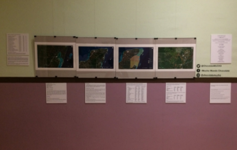

Un lugar llamado Cacao
Con la finalidad de terminar y pacificar de forma definitiva la Guerra de castas, el gobierno de Porfirio Díaz comienza a realizar diferentes propuestas para hacer un tratado con Gran Bretaña para controlar la frontera a lo largo del Río Hondo e impedir las ventas continuas de armas;
Este control no se logró hasta la llegada en 1898, cuando el Almirante Othón Pompeyo Blanco Núñez de Cáceres, llega a vigilar la aduana y soberanía de la desembocadura del Río Hondo;
El Cacao en la frontera
Es una exposición fotográfica que relata la historia contemporánea de Cacao
una población asentada en los márgenes del Río Hondo que constituye la frontera natural al sur del país.